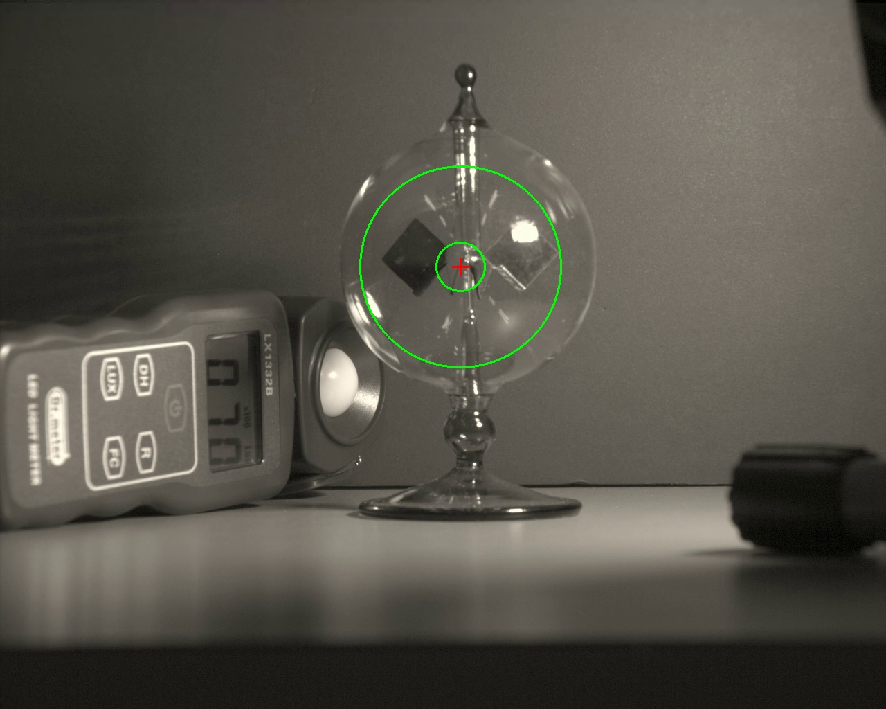
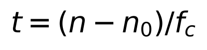
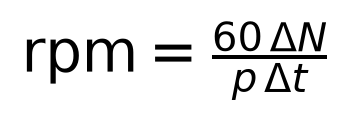
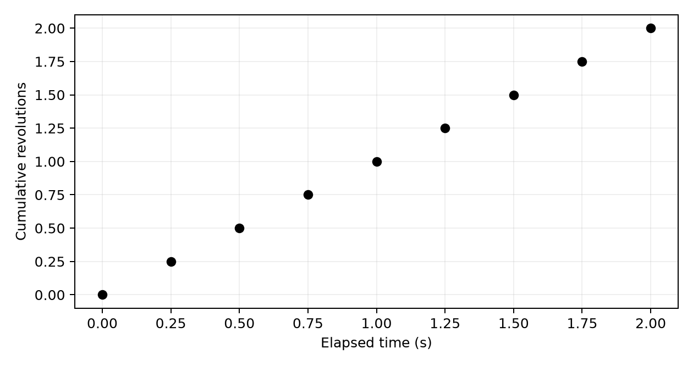
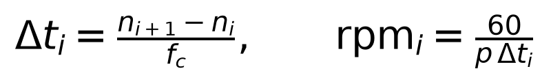
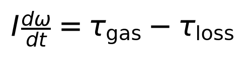
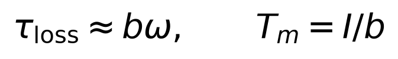
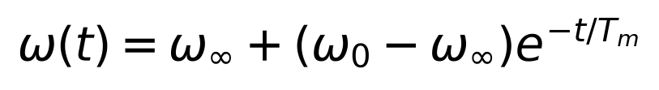
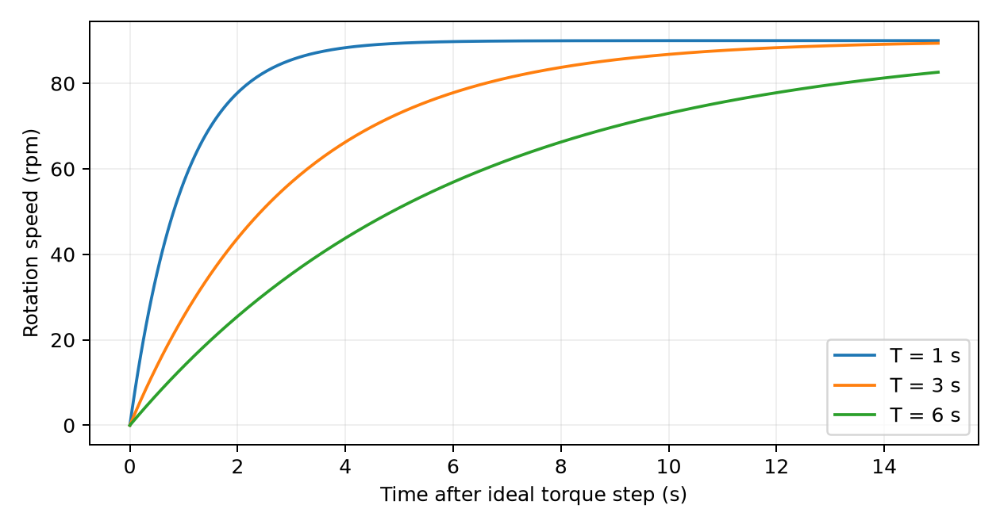

Radiometer
Lecture PDF · Laboratory guide and MATLAB
1
Radiometer
Light, heat and rotation
MIE 402 | Lecture 07 | Lab 6
Prof. Ehsan Roohi | Fall 2026
2
Engineering connections
Thermal gradients drive gas motion and forces in rarefied environments.
Optical tachometers measure rotation by timing repeatable passages.
Our measurement connects illumination, start-up and steady rotation.
Teaching note and source
Applications are mechanistic connections, not claims that this commercial device is an industrial power meter. Rarefied-gas thermal pumping: https://arxiv.org/abs/1703.05008
3
The course apparatus
Sealed glass bulb and freely rotating vanes.
Lamp supplies illumination. A lux meter records the light condition.
Camera records vane appearances. Green circles are an old analysis overlay.

Teaching note and source
Actual prior course apparatus image. Do not read the pictured meter as a calibration for a new run.
4
What drives the vanes
The dark and bright faces absorb radiation differently. Their temperatures can differ.
Residual gas exchanges energy and momentum with the surfaces. Edge-region thermal effects create a net torque.
Losses oppose the motion. The usual rotation is thermally driven through the gas.
Teaching note and source
https://www.math.hkust.edu.hk/~makxu/PAPER/Crookes-ugks.pdf and https://arxiv.org/abs/1512.02590. Avoid attributing rotation solely to unequal uniform pressure or ordinary buoyant convection.
5
Pressure and illumination limits
The sealed bulb contains residual gas. We do not vary or measure its pressure in this lab.
A hard vacuum removes the gas-driven mechanism. At higher pressures, transport and drag also change.
Changing brightness alone cannot reveal gas pressure or absolute torque.
Teaching note and source
Pressure dependence involves both driving force and drag: https://arxiv.org/abs/1512.02590
6
Lux and radiant power
Lux describes light weighted by human visual sensitivity. Irradiance has units W/m².
Keep the same lamp spectrum, geometry and meter orientation. Compare steady rpm with measured lux.
Do not infer optical efficiency or assume an inverse-square law for a nearby extended lamp.
7
What the video measures
Each image has a frame number n. The capture rate is in frames per second.
Choose a reference frame n₀. Physical elapsed time t is in seconds.
A slow-motion file can play at 60 fps while the camera acquired at a much higher rate.

8
A passage is not always a revolution
Observe one complete turn and define the crossing you will count.
p is the verified number of selected events per revolution. A unique vane crossing gives p = 1.
Repeated black/bright appearances can create multiple events. Confirm p from the film.
9
From event counts to rotation speed
ΔN is the number of intervals between marked events. With nine marks, ΔN = 8.
Δt is elapsed physical time [s]. rpm is revolutions per minute.
Speed magnitude comes from timing. Rotation direction comes from watching the movie.

10
Worked timing example
Synthetic example: frames 0, 250, ..., 2000 at capture rate = 1000 fps.
Elapsed time is 2 s. If p = 4, eight event intervals represent two full turns.
Result: 60 rpm, or 2π rad/s. Using 60 playback fps would give 3.6 rpm.

11
Changing speed during start-up
Use consecutive original frame numbers for the same passage event. Each interval gives one average speed.
Place that speed at the interval midpoint. Do not label it instantaneous angular acceleration.
A long interval may indicate slowing or a missed event. Check the film.

12
Rotational dynamics
I is rotor inertia [kg·m²]. ω is angular speed [rad/s]. t is time [s].
The two torque terms represent the driving gas torque and resisting losses, both in N·m.
Newton’s rotational law relates acceleration to the difference between these torques.

13
A simple transient approximation
Approximate loss torque as bω, with b in N·m·s. Assume constant driving torque.
Divide the torque balance by I. The angular acceleration plus (b/I) times angular speed equals the driving torque divided by I.
The mechanical time constant equals I/b. At steady rotation, the driving torque equals b times the final angular speed.

14
Solution of the previous ODE
For initial speed ω₀, subtract the steady solution from the previous ODE and integrate the remaining homogeneous equation.
The remaining departure from steady speed decays exponentially.
From rest, the speed reaches about 63% of its final value after one mechanical time constant.

15
Heating can change the response
The illustrated curves assume an ideal constant torque step and final speed of 90 rpm.
Larger T gives slower response. These curves are synthetic examples.
In the bulb, thermal inertia changes vane temperatures and torque. An observed time constant can combine thermal and mechanical effects.

16
The experimental comparison
Three safe distances, one lamp setting, measured lux at each condition.
Three repeats per condition, with comparable initial rotor and thermal conditions.
Record start-up and a later settled interval. Keep capture fps, filenames and illumination-on frames.
17
MATLAB workflow
Mark_Lab6_Passage_Frames.m: use arrows and Space to mark consecutive crossings. Q saves a CSV.
Run_Lab6_Radiometer.m: select the CSV, then enter actual capture fps and verified p.
Inspect exported revolutions and rpm. Recheck red-flagged intervals in the movie.
18
Report figures and interpretation
Show the apparatus, one run’s revolutions and rpm, and steady rpm versus lux with all repeats.
Explain differences using heating, gas torque, losses and measurement quality.
Report only quantities supported by the setup. Lab 6 report: Monday, December 7.